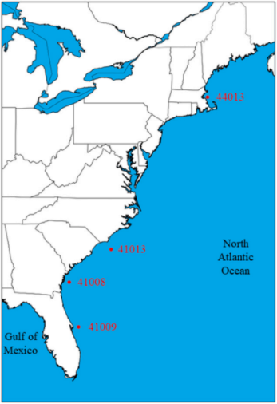

{% if title %}
Coastal Forecasting - {{ title }}
{% else %}
Coastal Forecasting
{% endif %}
US Atlantic Coastal Forecast
An AI-based nearshore wave forecast using recurrent neural network model
(Wei, 2021)
.
{% block content %}{% endblock %}
Select station on the map you wish to view >>>

Last prediction time: {{ current }} UTC Next prediction time: {{ next }} UTC
 }})